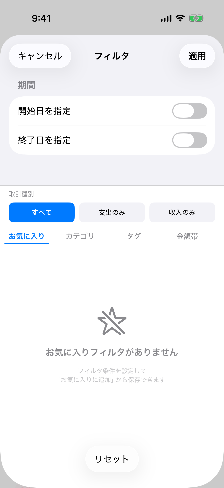
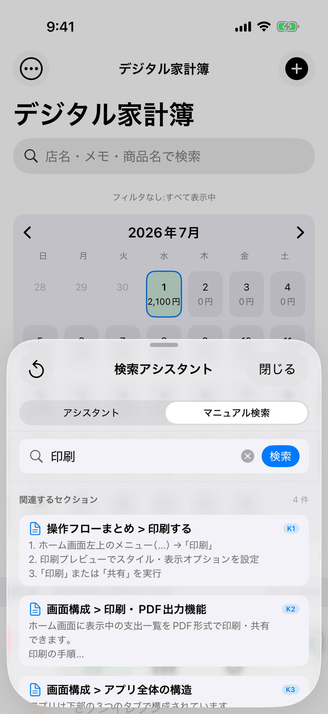
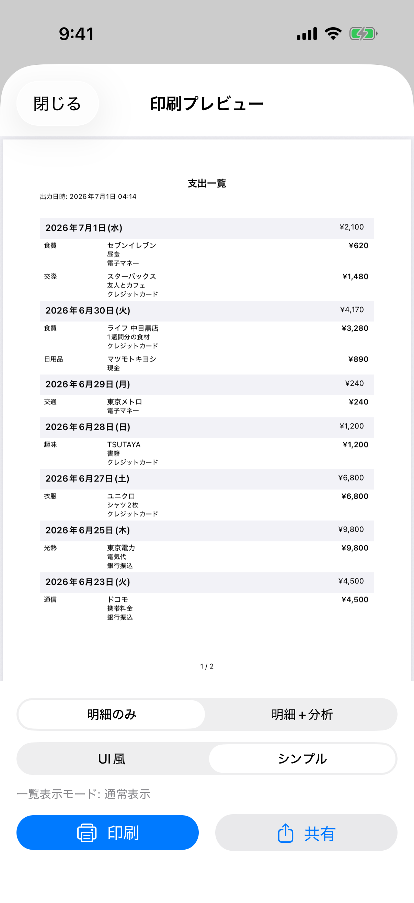

よくある質問
よくある質問¶
知りたいテーマの見出しから探してください。各項目は単独でも検索できます。
データとプライバシー¶
データはどこに保存されますか？¶
すべてのデータはお使いのデバイス内（ローカル）に保存されます。クラウドや外部サーバーには一切送信されません。個人情報の収集も行いません。
データのバックアップはできますか？¶
はい。設定 → データ管理 → CSVエクスポートでバックアップできます。
- 設定タブ →「データ管理」→「CSVエクスポート」
- 出力したCSVファイルをクラウドストレージやメール等に保存
- 復元するときは同じ「データ管理」から「CSVインポート」
iOSではiCloudのデバイスバックアップにもアプリのデータが含まれます。
機種変更のときデータを移行するには？¶
次のいずれかの方法で移行できます。
- CSVで移行: 旧端末でCSVエクスポート → ファイルを新端末に渡す → 新端末でCSVインポート
- iCloudバックアップから復元: 新端末をiCloudバックアップから復元すると、アプリのデータも復元されます
クラウドで複数端末と同期できますか？¶
現在、複数端末間の自動同期には対応していません。データはローカル保存です。端末間で移したい場合はCSVエクスポート／インポートをご利用ください。
入力・登録¶
支出と収入はどう切り替えますか？¶
入力フォーム上部の取引種別で「支出」「収入」を切り替えます。収入として登録すると、分析の集計でも収入として扱われます。
税込で金額を計算したいです¶
入力フォームの「税込で計算」をオンにすると、設定で指定した税率が金額に適用されます。税率は設定 → 一般設定で「税率1」「税率2」を設定でき、軽減税率などを使い分けられます。
過去のデータをコピーして入力できますか？¶
はい。新規作成画面の最上部にある「履歴から入力」を使うと、過去の支出から店名・カテゴリ・金額などをコピーして素早く入力できます。よく買う店や定期的な支払いに便利です。
金額を電卓で計算しながら入力できますか？¶
はい。金額入力では電卓機能が使え、その場で加減算した結果をそのまま金額として登録できます。
1件の支出に複数の商品（明細）を登録できますか？¶
はい。1件の支出に複数の明細（商品名・金額・数量など）を持たせられます。レシートの品目ごとに記録したい場合や、AI JSON・レシートスキャンで明細を取り込む場合に使われます。
日本円以外（外貨）で登録できますか？¶
金額には通貨を指定でき、既定は日本円（JPY）です。日本円の場合は小数を持たない整数として扱われます。
カレンダーから特定の日に追加できますか？¶
はい。ホーム画面上部のカレンダーで日付をタップすると、その日に対して「手動で追加」「レシートで追加」「外部アプリ連携」などの操作を選べます。あわせて「当日に移動（その日で絞り込み）」や「カレンダー状態の設定」も行えます。
カテゴリ・支払方法・タグ¶
カテゴリをカスタマイズできますか？¶
はい。設定 → カテゴリ管理で次のことができます。

- デフォルトカテゴリの名前・アイコン・色の変更
- 独自のカスタムカテゴリの作成（豊富なアイコンから選択可能）
- カスタムカテゴリの削除・並び替え
各カテゴリには現在の使用件数も表示されます。
支払方法を追加・編集できますか？¶
はい。設定 → 支払方法管理から、支払方法（現金・クレジットカード・電子マネーなど）の追加・名称変更・並び替え・初期状態へのリセットができます。
タグとは何ですか？どう使いますか？¶
タグは支出を横断的に分類するためのラベルです（例: 自分・家族・共有・旅行・仕事 など）。1件の支出に複数のタグを付けられ、フィルタや絞り込みで活用できます。設定 → タグ管理で追加・編集・並び替えができます。
並び順を変えたい／初期状態に戻したい¶
カテゴリ・支払方法・タグの各管理画面で、ドラッグして並び替えできます。デフォルト項目の並びは初期状態にリセットすることも可能です。
フィルタ・検索¶
支出を絞り込むには？¶
ホーム画面左上のメニュー（…）→「フィルタ」から、期間・取引種別・カテゴリ・タグ・金額帯・支払方法で絞り込めます。

よく使うフィルタを保存できますか？¶
はい。フィルタ条件に名前を付けて「お気に入りフィルタ」として保存でき、ワンタップで呼び出せます（期間は保存対象外）。お気に入りは設定から管理・並び替えできます。
検索は何を対象にしますか？¶
ホーム画面の検索バーは、店名・メモ・明細の商品名を対象にリアルタイムで絞り込みます。大文字・小文字は区別せず、フィルタと組み合わせて使えます。
ナビキャラクターの検索アシスタントとは？¶
貯金箱ナビキャラクターをタップすると、検索アシスタントが開きます。支出の意味検索（自然な言葉での検索）や、このユーザーマニュアルへの質問（マニュアル検索）ができます。

この機能はAI機能（Apple Intelligence またはローカルAIモデル）が有効な端末で利用できます（後述）。
検索インデックスは毎回手動で再生成する必要がありますか？¶
いいえ。意味検索のインデックスはアプリ起動時に自動で同期されます。明細を追加・編集・削除すると、次回起動時に自動で検索対象へ反映されるため、通常は手動操作は不要です。設定の「検索インデックスを再生成」は、検索結果が明らかにおかしいときや大量の明細を一括編集・インポートした直後など、リカバリ用として使います。詳しくは「設定機能の使い方」をご覧ください。
分析¶
分析画面では何が分かりますか？¶
期間ごとの合計・件数・平均、カテゴリ別の内訳（円グラフ）、月次の推移（棒グラフ）を確認できます。取引種別で「すべて／支出のみ／収入のみ」を切り替えられます。
期間を自由に指定できますか？¶
はい。「今月・過去3ヶ月・過去6ヶ月・過去12ヶ月・全期間」のプリセットに加えて、「カスタム」で開始日・終了日を自由に指定できます。
収入だけ・支出だけを集計できますか？¶
はい。分析画面上部の取引種別フィルタで「収入のみ」「支出のみ」を選ぶと、その種別だけを集計します。
印刷・エクスポート¶
一覧を印刷・PDFにできますか？¶
はい。ホーム画面のメニュー（…）→「印刷」で、表示中の一覧をA4のPDFとして印刷・共有できます。

フィルタや検索で絞り込んだ状態がそのまま印刷対象になります。
印刷スタイルの違いは？¶
- UI風: カテゴリアイコンや色付きインジケータを含むリッチな表示
- シンプル: テキストのみの表示（白黒印刷に最適）
メモ・タグ・支払方法の表示有無、余白サイズ、フォントサイズも切り替えられます。
CSVでエクスポート／インポートするには？¶
設定 → データ管理から、CSVエクスポート（書き出し）とCSVインポート（読み込み）ができます。バックアップや他端末への移行に使えます。
レシート・AI¶
レシートスキャンがうまくいきません¶
きれいに認識させるため、次の点を確認してください。
- 明るい場所で、レシートを平らに置いて撮影する
- レシート全体が画面に収まるようにする
- ピントを合わせてから撮影する
- 感熱紙の古いレシートは文字が薄く認識が難しいため、手動入力も検討する
それでも日付や金額が読み取れない場合は警告が表示されますが、レビュー画面で手動入力してそのまま保存できます（空欄のままの保存も可能）。
AI JSONで「必須項目が不足」エラーが出る¶
レビュー画面で不足項目を補ってください。
- 日付:
occurred_atまたはdateが null の場合 → DatePickerで日付を入力 - 金額:
totalまたはamountが null の場合 → 金額を入力 - カテゴリ: 未選択の場合 → カテゴリを選択（必須）
{
"occurred_at": null, // 警告: 日付を入力してください
"total": 1234,
"category": "食費"
}
明細が保存されないことがあります¶
明細（LineItem）は各要素に金額があるものだけが保存されます。
{
"items": [
{"name": "牛乳", "amount": 238}, // 保存される
{"name": "食パン", "amount": null} // 保存されない（警告表示）
]
}
「金額不明の明細 N 件は保存されません」と警告が表示されるので、重要な明細は金額を補ってください。
AI機能にはどんなエンジンがありますか？¶
AI機能（レシートの自動補完、ナビキャラクターの検索アシスタント）は、次の2つのエンジンのどちらかで動きます。
- Apple Intelligence: OSに内蔵されたAI。追加ダウンロード不要。対応端末が必要（iPhone 15 Pro 以降、M1 以降の iPad など）。
- ローカルAIモデル: 任意でダウンロードする高精度AI。レシートは画像を直接解析します。約3.0GBのダウンロードが必要ですが、対応端末以外でも使えます。
いま実際に使われているエンジンは、設定の「AI機能」→「現在のAIエンジン」で確認できます。
Apple Intelligence は必須ですか？ 使えない場合は？¶
必須ではありません。手動入力・AI JSON貼り付け・分析・印刷など基本機能はAIなしで使えます。
レシートの自動補完やナビキャラクターの検索アシスタントを使いたいが Apple Intelligence 非対応端末の場合は、「ローカルAIモデル」をダウンロードすれば同じ機能を利用できます（設定 →「ローカルAIモデル」）。
現在どちらのAIエンジンが使われているか確認したい¶
設定タブ →「AI機能」セクション →「現在のAIエンジン」に表示されます。
- Apple Intelligence … OS内蔵AIを使用中
- ローカルAIモデル … ダウンロードしたAIを使用中
- オフ … 「AI機能を使う」がOFF、または利用可能なエンジンがない
ローカルAIモデルとは何ですか？¶
Apple Intelligence の代わりに使える、任意ダウンロードの高精度AIモデル（Qwen3-VL 4B）です。レシート解析では画像そのものをAIが直接読み取るため、複雑なレシートや細かい明細の読み取り精度が向上します。推論はすべて端末内で行われ、データは外部に送信されません。
ローカルAIモデルはどうやって入れますか？¶
設定タブ →「ローカルAIモデル」→「モデルをダウンロード」から導入できます。
- サイズは約3.0GB。Wi-Fi接続でのダウンロードを強く推奨します。
- ダウンロード後は自動で整合性チェックが行われ、完了すると自動的にエンジンが「ローカルAIモデル」に切り替わります。
- 空き容量が不足している場合はダウンロードできません。
ローカルAIモデルはどこに保存されますか？ 削除できますか？¶
端末内の LocalLLM フォルダに保存され、iCloudバックアップの対象外です。
不要になったら 設定 →「ローカルAIモデル」→「モデルを削除」 でいつでも削除できます。削除すると自動的に Apple Intelligence に戻ります（対応端末の場合）。また、アプリのアップデートでモデルが新しくなった場合、古いモデルは起動時に自動的に削除されます。
ダウンロード中に別の画面に移動しても大丈夫ですか？¶
はい。ダウンロードは設定画面を離れても継続します。画面がスリープに入っても、他のアプリに切り替えても（アプリが動作している間は）進行します。設定画面に戻れば進捗の続きが表示されます。
ダウンロードを途中でやめたい／中断したらデータは残りませんか？¶
「キャンセル」を押すと、途中までダウンロードしたデータは自動的に削除されます（ゴミは残りません）。また、ダウンロードが失敗した場合も途中のデータは破棄されます。
アプリを完全に終了（タスク切り替えでスワイプ終了など）した場合はダウンロードが中断され、途中のデータは次回アプリ起動時に自動で削除されます。レジューム（途中からの再開）には対応していないため、その場合は最初からダウンロードし直してください。
万一、未完了のデータが残っている場合は、「ローカルAIモデル」画面に「未完了のダウンロードデータを削除」ボタンが表示されるので、そこから削除できます。
Apple Intelligence とローカルAIモデルを切り替えたい¶
両方が使える端末では、設定 →「ローカルAIモデル」→「使用するAIエンジン」でいつでも切り替えられます。切り替えた結果は「現在のAIエンジン」に反映されます。
ローカルAIモデルでの解析が遅い / 時間がかかります¶
ローカルAIモデルは端末内で高精度な解析を行うため、Apple Intelligence より時間がかかる場合があります（特にレシート画像の解析）。急ぐ場合は Apple Intelligence に切り替えるか、読み取り結果を待たずに手動で入力・保存することもできます。
macOSでレシートスキャンが使えません¶
レシートスキャンはiOS専用です。macOSでは「手動で追加」または「AI JSONで追加」をご利用ください。
編集・削除・初期化¶
支出を間違えて登録してしまいました¶
- 編集: 支出をタップ → 編集 → 修正 → 保存
- 削除: 支出を左にスワイプ → 削除
直前の操作を取り消せますか？（元に戻す）¶
支出を追加・削除した直後は、ホーム画面左上に「元に戻す」ボタンが表示され、直前の操作を取り消せます。
データを削除したいです¶
- 個別削除: 支出を左にスワイプ → 削除
- 全削除: 設定 →「アプリを初期化」（確認のため「DELETE」と入力する2段階確認）
初期化とアンインストールの違いは？¶
| 操作 | 初期化 | アンインストール |
|---|---|---|
| 実行方法 | 設定画面から | ホーム画面から |
| データ削除 | ✅ 削除 | ✅ 削除 |
| アプリ | ✅ 残る | ❌ 削除 |
| デフォルトデータ | ✅ 再作成 | - |
| すぐ使える | ✅ はい | ❌ 再インストールが必要 |
| 用途 | データだけリセット | アプリも削除 |
初期化が向いているケース: データだけクリアして使い続けたい／デフォルトのカテゴリ・タグに戻したい／テストデータを消して本番利用を始めたい。
アンインストールが向いているケース: アプリ自体が不要になった／完全に削除したい。